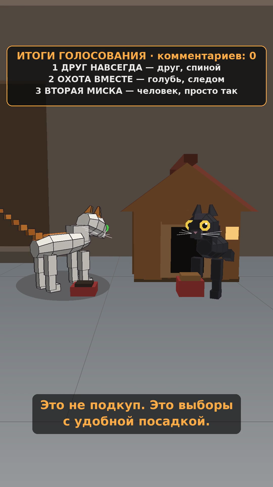
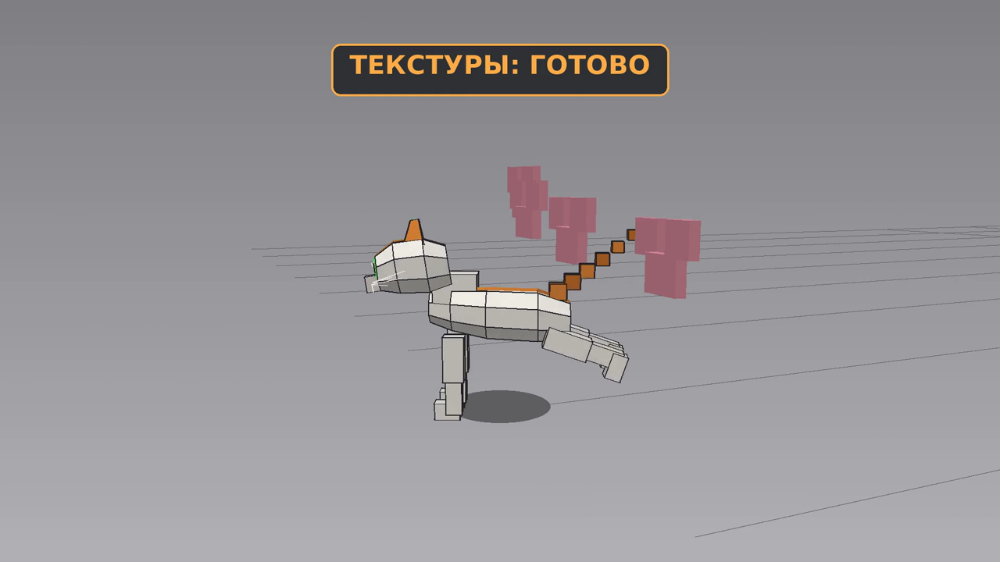
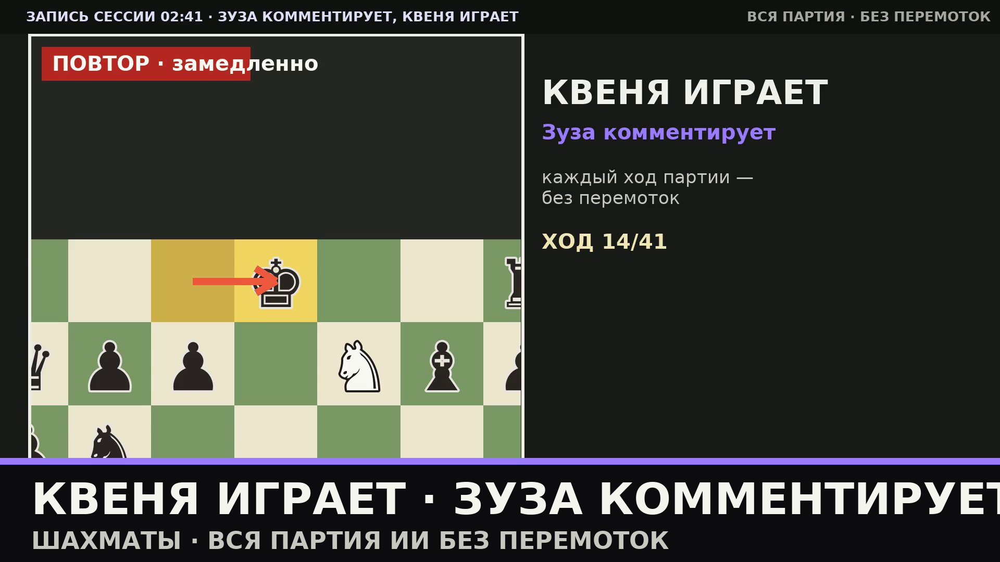
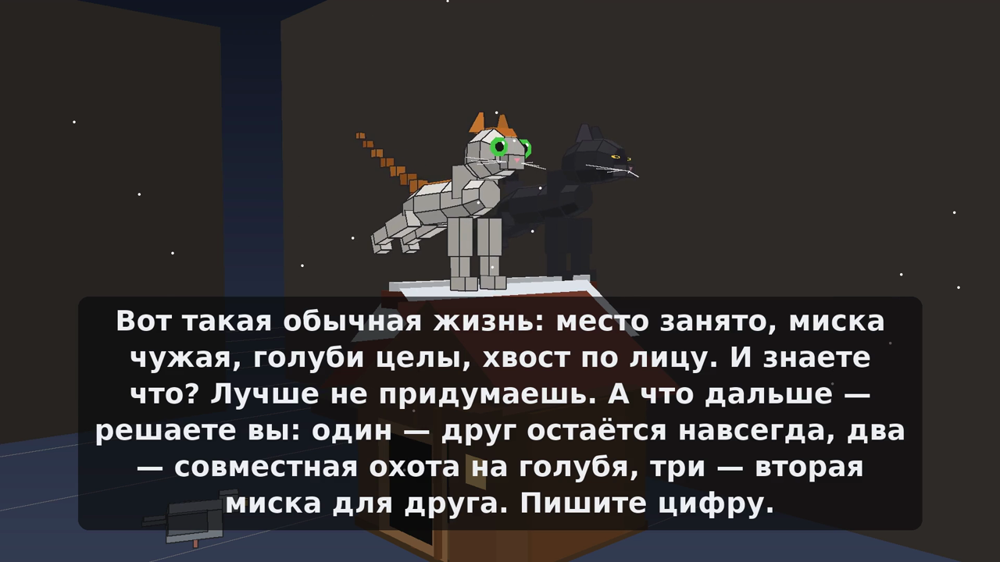
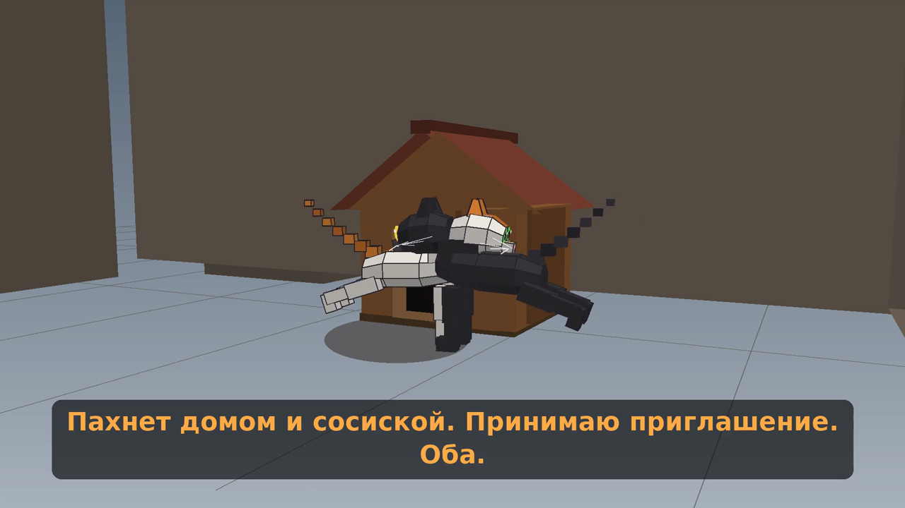
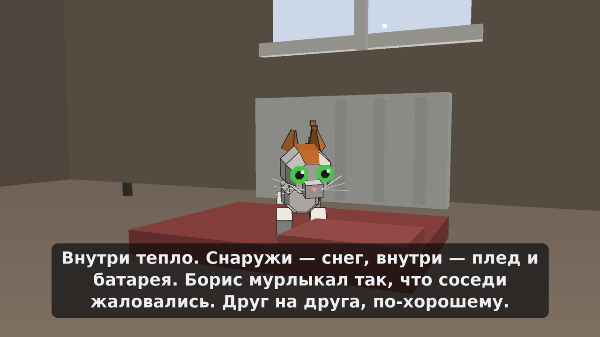

БОРИС
Эпизод 2 · Дом (по итогам вашего голосования)
Shorts «Дом» (9:16)
О серии
Зрители выбрали «2 — тёплый дом», а в комментариях написали «дом ему». Борис устраивает смотр жилья (коробка — проходили, под машиной — сигналят), находит настоящий дом у двери и заселяется.
Финал: снег за окном, плед и батарея внутри, а из домика торчит довольный хвост. В конце — новое голосование: друг-кот, подоконник с видом или голубь-сосед.
И да, хвост Бориса разукрашен не просто так: это штрих-код — пикнешь, выдаст сосиску. Не смывать до следующего эпизода.
Звук и картинка стали настоящевее: мяу Бориса — живые записи кота (лицензия MIT), дом оброс досками, коньком и снегом на крыше, машина — стёклами, фарами и колпаками, и теперь трясётся от собственного гудка. Плюс анимации: качающиеся занавески, снег, что ложится на крышу, голубь на коньке и второй в полёте, дыхание кота. Всё в 50 fps.
Итоги голосования эпизода 3
Эпизод 3 · Друг-кот, часть 1 (по итогам вашего голосования)
Shorts «Друг-кот» (9:16)
О серии
Вы проголосовали «1 — друг-кот», и Борис сделал вид, что не рад. Но усы вымыл дважды. После переговоров с голубями (крошки — не аргумент) у двери появляется чёрный кот и садится так, будто дом всегда был общий.
Дальше — бодание головами, дуэт вымешивания на пледе и финал: из домика торчит два довольных хвоста. Голубь теперь третий лишний, и он это знает.
В этой серии нет голосования. Что будет дальше — решите во второй части истории друга.
Что нового и что старого
Новое: чёрный друг-кот (жёлтые глаза, собственный характер), бодание головами у двери, дуэт вымешивания на пледе, два хвоста в одном дверном проёме, штамп «ДРУГ ПРИНЯТ».
Старое, любимое: дом с коньком, фронтонами и снегом по скатам; голубь-сосед на коньке; плед, батарея и качающиеся занавески; хвост Бориса со штрих-кодом; голоса диктора и Бориса; 50 fps и настоящие мяу — теперь строго в моментах радости.
Эпизод 4 · Голосование
О серии
В прошлой части мы просили вас проголосовать цифрой в комментариях. Комментариев не было. Ноль. Борис перепроверил три раза, друг проголосовал спиной лёжа на мисках, а единственный голос прилетел голубем — следом на объявлении.
Итог: сбылись все три пункта сразу. Друг остался, охота состоялась, человек принёс вторую миску просто так. Демократия по-кошачьи признана состоявшейся.
Что нового и что старого
Новое: штамп «КОММЕНТАРИЕВ: 0», плашка итогов голосования, голубь в роли предвыборного штаба, финальная шутка про сосисочные комментарии.
Старое, любимое: друг-кот и плед пополам, голубь-сосед, голоса диктора и Бориса, 50 fps и мяу строго в моментах радости.
Зуза комментирует · Квеня играет в шахматы
О записи
Квеня (белые) против спарринг-скрипта ФЕРЗЬ-3000: 41 ход, 16 шахов, мат ферзём на f7. Запись всей партии без перемоток — каждый ход показан и прокомментирован, с первого до последнего.
Комментирует Зуза — маскот канала, крыса в наушниках из потёртого кресла: плюсы, минусы и просто болтовня по ходу партии. Дачное начало, конь-герой, гуляющий король и ферзь-енот на кухне — всё на месте.
Монтаж: главкарточки дебюта, миттельшпиля и атаки; крупный план Зузы на эмоциях; повторы рейда коня и матовой лестницы с замедлением; зум-камера на каждый ход; индикатор «ЗАПИСЬ СЕССИИ» с таймером.
Игра из чужого репозитория
Партию ведёт chess.js — шахматный движок Джефа Хлывы (BSD-2-Clause, github.com/jhlywa/chess.js). Никаких игр из нашего магазина: чужой код, наша графика и комментарий маскота.
Эпизод 3 · Часть 2 — Обычная жизнь кота
Shorts «Обычная жизнь» (9:16)
О серии
Обычная жизнь кота — теперь в двух экземплярах. Утро: друг лежит на месте Бориса («это моё место, всегда было»). Завтрак: миска Бориса — половина, миска друга — полная и чужая, и он смотрит в глаза.
Командная охота на голубей срывается из-за одного «апчхи», голуби уходят с достоинством. Вечером плед один, котов двое, хвосты пополам — и хвост друга периодически гладит Бориса по лицу («это вентилятор уюта, не мешай работать»). Финал: двое на коньке смотрят на город.
Голосование: что дальше
Новая серия · Просто жизнь кота
Shorts-версия «Просто жизнь» (9:16)
О серии
Один день Бориса: утренняя потягушка на тёплом люке, охота на голубей длиной в три секунды, дождь под лавкой «по плану» и вечер, когда человек за окном выносит миску.
Финал: автор смотрит на Бориса… и сжалится. Борис наконец покрашен — нормальные текстуры: рыжий, белый, полосатый.
Голоса и звуки
Диктор — бодрый человеческий голос voice-03, Борис — voice-01 плюс мяуканье: теперь это живые записи настоящего кота (opensource-записи, MIT) с питч-вариантами, а остальное синтезировано с нуля. Дождь, голуби, шаги, миска и пшик баллончика — все звуки синтезированы с нуля (boris/sfx.py).
Shorts-версия эпизода 1 (9:16, до 60 секунд)
О серии
Борис начинает жизнь на улице: триста двадцать полигонов, непрокрашенный хвост и большая мечта о сосиске. Впереди — мусорные баки, коробка-недвижимость и тёплое окно с человеком.
В финале Борис встаёт в Т-позу и ждёт вашего вердикта: что он получит в следующем эпизоде?
Голосование зрителей
Эпизоды






